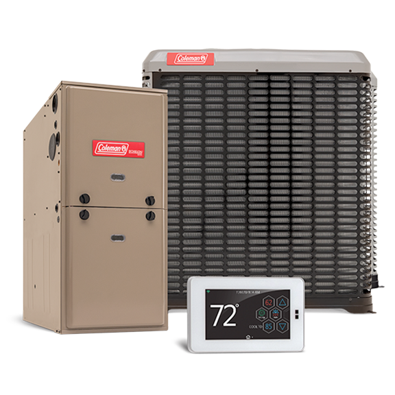
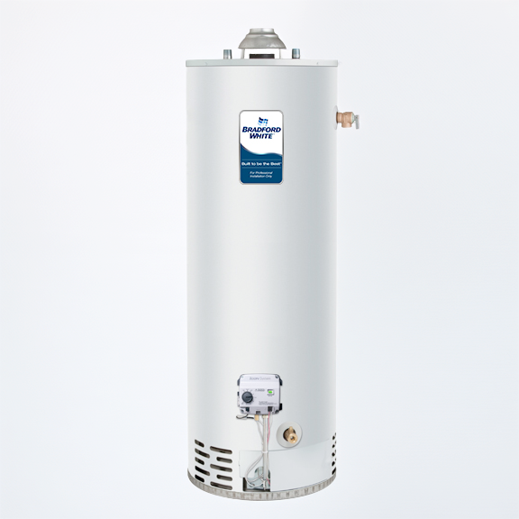

Quality Equipment. Reliable Brands.
Find the best air conditioners, furnaces, water heaters, and plumbing products in Marion, KS with Suffield's Heating, Cooling & Plumbing. We install, replace, and service a full range of HVAC and plumbing equipment from top brands—helping you choose the right fit for your home or business and ensuring years of reliable comfort.

Heating & Cooling
- High-efficiency furnaces
- Central air conditioning units
- Heat pumps & ductless mini-splits
- Programmable thermostats

Plumbing
- Water heaters (tank & tankless)
- Water softeners & filtration
- Garbage disposals
- Faucets & fixtures